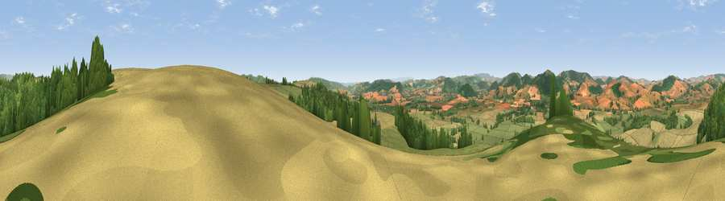

Viewpoint near Clungunford
#5620 in England · top 17% of its area beats it · near ClungunfordWhere it is
The exact computed spot (SO 41075 76988). Click the marker for map links.
The view, rendered

A 360° render of this exact spot computed from the terrain model, tree cover and land cover — summer colours, afternoon light, calibrated against photographs of famous viewpoints. Real trees, hedges and buildings will differ in detail.
The panorama
Grey silhouette: terrain skyline in each direction (720 bearings, Earth curvature and refraction included). Dashed green: skyline with trees (+15 m) and buildings (+8 m) as obstacles. Blue strip: how far the ground is visible on each bearing.
Where the view opens
Wedge length = distance to the farthest visible ground on that bearing (vegetation-aware). Rings at 10, 25 and 50 km.
What fills the view
38% grassland · 32% cropland · 30% woodland
Angular shares of the visible panorama (visual magnitude), not map area. Landscape diversity 0.48 (0–1 Shannon).
Key numbers
More beautiful places nearby
The staircase of upgrades: each row has a higher view potential than everything closer. Driving times are estimates from straight-line distance, calibrated against real road routing — check an actual route before setting out.
| Place | Direction | Drive | Score |
|---|---|---|---|
| Viewpoint near Clungunford | ENE · 1 km | ~2 min | 72.3 |
| Viewpoint near Leintwardine | SSE · 2 km | ~6 min | 73.9 |
| Goat Hill | NNE · 3 km | ~7 min | 75.0 |
| Viewpoint near Hopton Castle | W · 5 km | ~11 min | 79.3 |
| Viewpoint near Pipe Aston | SE · 6 km | ~13 min | 81.9 |
| Bringewood Hill | ESE · 7 km | ~14 min | 82.2 |
| Gatley Hill | SSE · 8 km | ~17 min | 82.6 |
| Viewpoint near Asterton | N · 12 km | ~22 min | 83.0 |
52.38773, -2.86724 · source: screening · position refined by local search. Computed location — check access rights before visiting.